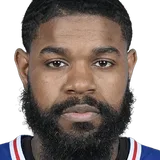

His best final NBA finish was #3 of 30, with the 2007-08 Detroit Pistons. In his 870 games for 4 teams over 14 seasons they went 458–412 (52.6%), +46 games over .500, with an average final finish of 11.8.
Jump to: Record by opponent · Season by season · Teammate help
Compare Amir Johnson with…
Suggested, same era and similar teammate help:


Final NBA finish, season by season
Title Finals Other playoffs Missed playoffs. #1 = champion; the dashed line is last place that season. Each point opens that season's final standings.
All 30 teams ranked in 2007-08, his best finish (#3)Teammate help
 Chauncey Billups11.54 seasons
Chauncey Billups11.54 seasons Joel Embiid9.02 seasons
Joel Embiid9.02 seasons Ben Wallace8.01 season
Ben Wallace8.01 season
Seasons with help 2.7 to 4.5 (4): best finish #3 of 30, 2007-08, worst #16 of 30, 2008-09.
Career
Career records (W–L, W − L, with and without) include 2026-27 games through Nov. 19, 2026; season counts and finishes are through 2025-26. Each card opens its board in the same scope. How we count.

Latest completed seasons
- 2018-19·
 Philadelphia·#7 of 3051–31 · Lost in the conference semifinals 3–4 to
Philadelphia·#7 of 3051–31 · Lost in the conference semifinals 3–4 to  Toronto
Toronto - 2017-18·Philadelphia·#6 of 3052–30 · Lost in the conference semifinals 1–4 to
 Boston
Boston - 2016-17·Boston·#4 of 3053–29 · Lost in the conference finals 1–4 to
 Cleveland
Cleveland
Season by season
Newest first; every header sorts. Final NBA finish is the team's rank among all teams that season (#1 = champion) and opens that season's standings. "Without him" uses the team-season window; the span line counts only the games between his first and last game for the team.
| 2018-19 | #7 of 30 | 51–31 62.2% | Lost conf semis 3–4 | 51 of 82 | 32–19 62.7% | 19–12 61.3%span: 19–12, gap +1.5 | +1.5 | |
| 2017-18 | #6 of 30 | 52–30 63.4% | Lost conf semis 1–4 | 74 of 82 | 47–27 63.5% | 5–3 62.5%span: 5–3, gap +1.0 | +1.0 | |
| 2016-17 | #4 of 30 | 53–29 64.6% | Lost conf finals 1–4 | 80 of 82 | 51–29 63.7% | 2–0 100.0%span: 2–0, gap −36.3 | −36.3 | |
| 2015-16 | #10 of 30 | 48–34 58.5% | Lost 1st round 2–4 | 79 of 82 | 45–34 57.0% | 3–0 100.0%span: 3–0, gap −43.0 | −43.0 | |
| 2014-15 | #12 of 30 | 49–33 59.8% | Lost 1st round 0–4 | 75 of 82 | 44–31 58.7% | 5–2 71.4%span: 5–2, gap −12.8 | −12.8 | |
| 2013-14 | #13 of 30 | 48–34 58.5% | Lost 1st round 3–4 | 77 of 82 | 43–34 55.8% | 5–0 100.0%span: 5–0, gap −44.2 | −44.2 | |
| 2012-13 | #19 of 30 | 34–48 41.5% | Missed playoffs | 81 of 82 | 34–47 42.0% | 0–1 0.0%span: 0–1, gap +42.0 | +42.0 | |
| 2011-12 | #23 of 30 | 23–43 34.8% | Missed playoffs | 64 of 66 | 22–42 34.4% | 1–1 50.0%span: 0–1, gap +34.4 | −15.6 | |
| 2010-11 | #28 of 30 | 22–60 26.8% | Missed playoffs | 72 of 82 | 20–52 27.8% | 2–8 20.0%span: 1–4, gap +7.8 | +7.8 | |
| 2009-10 | #18 of 30 | 40–42 48.8% | Missed playoffs | 82 of 82 | 40–42 48.8% | N/A | N/A | |
| 2008-09 | #16 of 30 | 39–43 47.6% | Lost 1st round 0–4 | 62 of 82 | 27–35 43.5% | 12–8 60.0%span: 12–8, gap −16.5 | −16.5 | |
| 2007-08 | #3 of 30 | 59–23 72.0% | Lost conf finals 2–4 | 62 of 82 | 49–13 79.0% | 10–10 50.0%span: 9–10, gap +31.7 | +29.0 | |
| 2006-07 | #3 of 30 | 53–29 64.6% | Lost conf finals 2–4 | 8 of 82 | 3–5 37.5% | 50–24 67.6%span: 48–22, gap −31.1 | −30.1 | |
| 2005-06 | #3 of 30 | 64–18 78.0% | Lost conf finals 2–4 | 3 of 82 | 1–2 33.3% | 63–16 79.7%span: 30–11, gap −39.8 | −46.4 |
On/off, starts and close games
From the lineup data, 1996-97 on. On/off is net points per 100 possessions with him on the floor minus off, a different unit from the win-rate gaps. Started and off the bench are team records in those games; close games are those within 5 points in the last 5 minutes with him on the floor.
| 2018-19 | −9.3 | 3–3 50.0% | 29–16 64.4% | 1–2 33.3% | |
| 2017-18 | −5.2 | 10–8 55.6% | 37–19 66.1% | 3–0 100.0% | |
| 2016-17 | +9.5 | 49–28 63.6% | 2–1 66.7% | 10–8 55.6% | |
| 2015-16 | +4.2 | 44–32 57.9% | 1–2 33.3% | 14–16 46.7% | |
| 2014-15 | −1.9 | 43–29 59.7% | 1–2 33.3% | 18–13 58.1% | |
| 2013-14 | +3.1 | 42–30 58.3% | 1–4 20.0% | 22–18 55.0% | |
| 2012-13 | +14.7 | 18–20 47.4% | 16–27 37.2% | 19–27 41.3% | |
| 2011-12 | +8.6 | 13–30 30.2% | 9–12 42.9% | 11–17 39.3% | |
| 2010-11 | +6.3 | 13–41 24.1% | 7–11 38.9% | 12–20 37.5% | |
| 2009-10 | +6.6 | 3–2 60.0% | 37–40 48.1% | 6–7 46.2% | |
| 2008-09 | +9.6 | 15–9 62.5% | 12–26 31.6% | 7–2 77.8% | |
| 2007-08 | +1.7 | N/A | 49–13 79.0% | 7–4 63.6% | |
| 2006-07 | +8.0 | N/A | 3–5 37.5% | 1–1 50.0% | |
| 2005-06 | −28.6 | N/A | 1–2 33.3% | N/A |
Teammate help by season
Two separate numbers per season, each with every teammate that adds to it. Help this season = Teammates Score points for honors won that season by teammates who shared a game with him. Help coming in = the same teammates' honors from the season before. How help works.
- 2018-19Philadelphia
Joel Embiid All-NBA 2ndAll-StarAll-Def 2nd4.537 g
 Ben Simmons All-Star148 g
Ben Simmons All-Star148 g Landry Shamet All-Rookie 2nd0.12537 g
Landry Shamet All-Rookie 2nd0.12537 g
Help this season: 5.625 = 4.5 Joel Embiid + 1 Ben Simmons + 0.125 Landry Shamet
More: help coming in and other teammates
Help coming in (teammates' honors the season before): 9.75 = 4.5 Joel Embiid + 3.5 Jimmy Butler + 1 Robert Covington + 0.75 Ben Simmons
Other teammates (no honors that season): JJ Redick 48 g, TJ McConnell 45 g, Jimmy Butler 31 g, Furkan Korkmaz 31 g, Mike Muscala 30 g, Jonah Bolden 27 g, Wilson Chandler 23 g, Markelle Fultz 19 g, Shake Milton 14 g, Dario Saric 13 g, Robert Covington 13 g, Mike Scott 13 g, Tobias Harris 13 g, James Ennis 9 g and 8 more
- 2017-18Philadelphia
Joel Embiid All-NBA 2ndAll-StarAll-Def 2nd4.555 g
 Robert Covington All-Def 1st172 gBen Simmons ROYAll-Rookie 1st0.7573 g
Robert Covington All-Def 1st172 gBen Simmons ROYAll-Rookie 1st0.7573 g
Help this season: 6.25 = 4.5 Joel Embiid + 1 Robert Covington + 0.75 Ben Simmons
More: help coming in and other teammates
Help coming in (teammates' honors the season before): 0.5 = 0.25 Dario Saric + 0.25 Joel Embiid
Other teammates (no honors that season): Dario Saric 70 g, TJ McConnell 68 g, JJ Redick 62 g, Timothe Luwawu 46 g, Richaun Holmes 40 g, Jerryd Bayless 38 g, Justin Anderson 34 g, Trevor Booker 31 g, Marco Belinelli 23 g, Ersan Ilyasova 19 g, Markelle Fultz 13 g, Furkan Korkmaz 13 g, James Young 6 g, Nik Stauskas 6 g and 5 more
- 2016-17Boston
 Isaiah Thomas All-NBA 2ndAll-Star474 g
Isaiah Thomas All-NBA 2ndAll-Star474 g Jaylen Brown All-Rookie 2nd0.12577 g
Jaylen Brown All-Rookie 2nd0.12577 g
Help this season: 4.125 = 4 Isaiah Thomas + 0.125 Jaylen Brown
More: help coming in and other teammates
Help coming in (teammates' honors the season before): 3 = 1 Isaiah Thomas + 1 Al Horford + 1 Avery Bradley
Other teammates (no honors that season): Marcus Smart 77 g, Jonas Jerebko 76 g, Kelly Olynyk 73 g, Terry Rozier 73 g, Jae Crowder 70 g, Al Horford 66 g, Avery Bradley 54 g, Tyler Zeller 50 g, Gerald Green 46 g, James Young 29 g, Jordan Mickey 24 g, Demetrius Jackson 5 g
- 2015-16Boston
Isaiah Thomas All-Star179 g
 Avery Bradley All-Def 1st173 g
Avery Bradley All-Def 1st173 g
Help this season: 2 = 1 Isaiah Thomas + 1 Avery Bradley
More: help coming in and other teammates
Help coming in (teammates' honors the season before): 0.125 = 0.125 Marcus Smart
Other teammates (no honors that season): Jared Sullinger 79 g, Evan Turner 78 g, Jonas Jerebko 75 g, Jae Crowder 70 g, Kelly Olynyk 66 g, Marcus Smart 60 g, Tyler Zeller 57 g, Terry Rozier 38 g, RJ Hunter 34 g, James Young 28 g, David Lee 28 g, Jordan Mickey 15 g, Coty Clarke 3 g
- 2014-15Toronto
 Kyle Lowry All-Star165 g
Kyle Lowry All-Star165 g Louis Williams Sixth Man0.573 g
Louis Williams Sixth Man0.573 g
Help this season: 1.5 = 1 Kyle Lowry + 0.5 Louis Williams
More: help coming in and other teammates
Help coming in (teammates' honors the season before): 1 = 1 DeMar DeRozan
Other teammates (no honors that season): Terrence Ross 75 g, Greivis Vasquez 75 g, Jonas Valanciunas 74 g, Patrick Patterson 74 g, Tyler Hansbrough 67 g, James Johnson 64 g, DeMar DeRozan 53 g, Landry Fields 25 g, Chuck Hayes 22 g, Greg Stiemsma 14 g, Bruno Caboclo 7 g, Lucas Nogueira 6 g
- 2013-14Toronto
 DeMar DeRozan All-Star174 g
DeMar DeRozan All-Star174 g
Help this season: 1 = 1 DeMar DeRozan
More: help coming in and other teammates
Help coming in (teammates' honors the season before): 0.125 = 0.125 Jonas Valanciunas
Other teammates (no honors that season): Terrence Ross 76 g, Jonas Valanciunas 76 g, Kyle Lowry 76 g, Tyler Hansbrough 59 g, Greivis Vasquez 56 g, John Salmons 55 g, Steve Novak 50 g, Patrick Patterson 43 g, Chuck Hayes 40 g, Landry Fields 30 g, Julyan Stone 20 g, Nando De Colo 18 g, Rudy Gay 18 g, Dwight Buycks 13 g and 4 more
- 2012-13Toronto
 Jonas Valanciunas All-Rookie 2nd0.12561 g
Jonas Valanciunas All-Rookie 2nd0.12561 g
Help this season: 0.125 = 0.125 Jonas Valanciunas
More: help coming in and other teammates
Help coming in (teammates' honors the season before): 0
Other teammates (no honors that season): DeMar DeRozan 81 g, Terrence Ross 72 g, Kyle Lowry 68 g, Alan Anderson 65 g, John Lucas III 62 g, Landry Fields 51 g, Ed Davis 44 g, Jose Calderon 44 g, Aaron Gray 41 g, Andrea Bargnani 35 g, Rudy Gay 33 g, Quincy Acy 29 g, Linas Kleiza 20 g, Mickael Pietrus 18 g and 2 more
- 2011-12TorontoHelp this season: 0, no honored teammate
- 2010-11TorontoHelp this season: 0, no honored teammate
- 2009-10Toronto
 Chris Bosh All-Star170 g
Chris Bosh All-Star170 g
Help this season: 1 = 1 Chris Bosh
More: help coming in and other teammates
Help coming in (teammates' honors the season before): 1 = 1 Chris Bosh
Other teammates (no honors that season): Jarrett Jack 82 g, Andrea Bargnani 80 g, DeMar DeRozan 77 g, Hidayet Turkoglu 74 g, Sonny Weems 69 g, Jose Calderon 68 g, Antoine Wright 67 g, Marco Belinelli 66 g, Radoslav Nesterovic 42 g, Reggie Evans 28 g, Marcus Banks 22 g, Pops Mensah-Bonsu 16 g, Patrick O'Bryant 11 g
- 2008-09
 Detroit
Chauncey Billups All-NBA 3rdAll-Star32 g
Detroit
Chauncey Billups All-NBA 3rdAll-Star32 g Allen Iverson All-Star143 g
Allen Iverson All-Star143 g
Help this season: 4 = 3 Chauncey Billups + 1 Allen Iverson
More: help coming in and other teammates
Help coming in (teammates' honors the season before): 4.625 = 1 Rasheed Wallace + 1 Richard Hamilton + 1 Allen Iverson + 1 Chauncey Billups + 0.5 Tayshaun Prince + 0.125 Rodney Stuckey
Other teammates (no honors that season): Tayshaun Prince 62 g, Rodney Stuckey 59 g, Jason Maxiell 59 g, Arron Afflalo 58 g, Rasheed Wallace 47 g, Richard Hamilton 47 g, Kwame Brown 45 g, Antonio McDyess 43 g, Walter Herrmann 43 g, Will Bynum 41 g, Walter Sharpe 8 g, Alex Acker 7 g
- 2007-08Detroit
Chauncey Billups All-Star158 g
 Rasheed Wallace All-Star158 gRichard Hamilton All-Star153 g
Rasheed Wallace All-Star158 gRichard Hamilton All-Star153 g Tayshaun Prince All-Def 2nd0.562 g
Tayshaun Prince All-Def 2nd0.562 g Rodney Stuckey All-Rookie 2nd0.12547 g
Rodney Stuckey All-Rookie 2nd0.12547 g
Help this season: 3.625 = 1 Chauncey Billups + 1 Rasheed Wallace + 1 Richard Hamilton + 0.5 Tayshaun Prince + 0.125 Rodney Stuckey
More: help coming in and other teammates
Help coming in (teammates' honors the season before): 4.625 = 3 Chauncey Billups + 1 Richard Hamilton + 0.5 Tayshaun Prince + 0.125 Walter Herrmann
Other teammates (no honors that season): Jarvis Hayes 62 g, Jason Maxiell 62 g, Antonio McDyess 58 g, Arron Afflalo 58 g, Walter Herrmann 24 g, Lindsey Hunter 19 g, Juan Dixon 16 g, Theo Ratliff 15 g, Ronald Murray 13 g, Primoz Brezec 13 g, Nazr Mohammed 13 g, Cheikh Samb 4 g, Ronald Dupree 1 g
- 2006-07Detroit
Chauncey Billups All-NBA 3rdAll-Star34 gRichard Hamilton All-Star16 gTayshaun Prince All-Def 2nd0.58 g
Help this season: 4.5 = 3 Chauncey Billups + 1 Richard Hamilton + 0.5 Tayshaun Prince
More: help coming in and other teammates
Help coming in (teammates' honors the season before): 7 = 4.5 Chauncey Billups + 1 Rasheed Wallace + 1 Richard Hamilton + 0.5 Tayshaun Prince
Other teammates (no honors that season): Rasheed Wallace 8 g, Antonio McDyess 8 g, Carlos Delfino 8 g, Ronald Murray 8 g, Jason Maxiell 8 g, Ronald Dupree 6 g, Lindsey Hunter 5 g, Nazr Mohammed 5 g, Chris Webber 3 g, Will Blalock 2 g, Dale Davis 1 g
- 2005-06Detroit
Ben Wallace DPOYAll-NBA 2ndAll-StarAll-Def 1st83 gChauncey Billups All-NBA 2ndAll-StarAll-Def 2nd4.52 gRasheed Wallace All-Star12 gRichard Hamilton All-Star12 gTayshaun Prince All-Def 2nd0.53 g
Help this season: 15 = 8 Ben Wallace + 4.5 Chauncey Billups + 1 Rasheed Wallace + 1 Richard Hamilton + 0.5 Tayshaun Prince
More: help coming in and other teammates
Help coming in (teammates' honors the season before): 8 = 7 Ben Wallace + 0.5 Tayshaun Prince + 0.5 Chauncey Billups
Other teammates (no honors that season): Antonio McDyess 3 g, Jason Maxiell 3 g, Tony Delk 2 g, Carlos Delfino 2 g, Maurice Evans 2 g, Kelvin Cato 2 g, Alex Acker 2 g, Dale Davis 1 g, Lindsey Hunter 1 g, Darko Milicic 1 g, Carlos Arroyo 1 g
Record against each opponent
- Best regular-season record against one franchise: 20–3 (87.0%) against the Minnesota Timberwolves in 23 games.
- Toughest regular-season record against one franchise: 5–16 (23.8%) against the Portland Trail Blazers in 21 games.
- Most playoff series against one franchise: 2 against the Washington Wizards, 1–1 in series and 4–7 in games.
Regular season, through 2025-26 (2026-27 games not included): 870 games, 458–412, against 30 franchises.
Grouped by franchise (named as today); game lists keep each team's name that season. Filters and the tab are kept in the URL, so a filtered view can be shared.
| Games list | |||||||
|---|---|---|---|---|---|---|---|
| 45 | 28–17 | 62.2% | +11 | N/A | 2007-08 to 2018-19 | ||
| 41 | 20–21 | 48.8% | −1 | 0–2 (1–6 in games) | 2007-08 to 2018-19 | ||
| 41 | 27–14 | 65.9% | +13 | 1–1 (4–7 in games) | 2005-06 to 2018-19 | ||
| 40 | 23–17 | 57.5% | +6 | 0–1 (3–4 in games) | 2007-08 to 2018-19 | ||
| 39 | 19–20 | 48.7% | −1 | N/A | 2005-06 to 2018-19 | ||
| 38 | 16–22 | 42.1% | −6 | 0–1 (2–4 in games) | 2007-08 to 2018-19 | ||
| 38 | 17–21 | 44.7% | −4 | 1–0 (4–1 in games) | 2007-08 to 2018-19 | ||
| 37 | 15–22 | 40.5% | −7 | 1–0 (1–2 in games) | 2006-07 to 2018-19 | ||
| 37 | 25–12 | 67.6% | +13 | N/A | 2009-10 to 2018-19 | ||
| 37 | 19–18 | 51.4% | +1 | N/A | 2007-08 to 2018-19 | ||
| 36 | 25–11 | 69.4% | +14 | 1–0 (1–1 in games) | 2007-08 to 2018-19 | ||
| 36 | 24–12 | 66.7% | +12 | 1–0 (3–1 in games) | 2006-07 to 2016-17 | ||
| 35 | 20–15 | 57.1% | +5 | N/A | 2007-08 to 2018-19 | ||
| 31 | 10–21 | 32.3% | −11 | 0–2 (1–4 in games) | 2006-07 to 2018-19 | ||
| 23 | 13–10 | 56.5% | +3 | N/A | 2007-08 to 2018-19 | ||
| 23 | 11–12 | 47.8% | −1 | N/A | 2007-08 to 2018-19 | ||
| 23 | 20–3 | 87.0% | +17 | N/A | 2005-06 to 2018-19 | ||
| 22 | 10–12 | 45.5% | −2 | N/A | 2007-08 to 2018-19 | ||
| 22 | 15–7 | 68.2% | +8 | N/A | 2007-08 to 2018-19 | ||
| 22 | 10–12 | 45.5% | −2 | N/A | 2007-08 to 2018-19 | ||
| 22 | 11–11 | 50.0% | 0 | N/A | 2007-08 to 2018-19 | ||
| 21 | 8–13 | 38.1% | −5 | N/A | 2007-08 to 2018-19 | ||
| 21 | 5–16 | 23.8% | −11 | N/A | 2007-08 to 2018-19 | ||
| 21 | 10–11 | 47.6% | −1 | N/A | 2006-07 to 2017-18 | ||
| 21 | 9–12 | 42.9% | −3 | 0–1 (3–1 in games) | 2006-07 to 2018-19 | ||
| 20 | 9–11 | 45.0% | −2 | N/A | 2007-08 to 2017-18 | ||
| 20 | 14–6 | 70.0% | +8 | N/A | 2006-07 to 2018-19 | ||
| 20 | 12–8 | 60.0% | +4 | N/A | 2008-09 to 2018-19 | ||
| 19 | 8–11 | 42.1% | −3 | N/A | 2006-07 to 2016-17 | ||
| 19 | 5–14 | 26.3% | −9 | N/A | 2008-09 to 2018-19 |
Rows add up to his career record in his games. A playoff series counts when he played in it; early round-robin games show as games only. How we count.
Playoffs, with and without him
| 2018-19 | Lost in the conference semifinals 3–4 to | #7 of 30 | 4 of 12 | 3–1 75.0% | 4–4 50.0% | +25.0 | |
| 2017-18 | Lost in the conference semifinals 1–4 to | #6 of 30 | 8 of 10 | 4–4 50.0% | 1–1 50.0% | 0.0 | |
| 2016-17 | Lost in the conference finals 1–4 to | #4 of 30 | 14 of 18 | 6–8 42.9% | 3–1 75.0% | −32.1 | |
| 2015-16 | Lost in the first round 2–4 to | #10 of 30 | 6 of 6 | 2–4 33.3% | N/A | N/A | |
| 2014-15 | Lost in the first round 0–4 to | #12 of 30 | 4 of 4 | 0–4 0.0% | N/A | N/A | |
| 2013-14 | Lost in the first round 3–4 to | #13 of 30 | 7 of 7 | 3–4 42.9% | N/A | N/A | |
| 2008-09 | Lost in the first round 0–4 to | #16 of 30 | 3 of 4 | 0–3 0.0% | 0–1 0.0% | 0.0 | |
| 2007-08 | Lost in the conference finals 2–4 to | #3 of 30 | 8 of 17 | 5–3 62.5% | 5–4 55.6% | +6.9 |
Arrival and departure
Team wins per 82 games the season before he arrived vs his first season there, and his last season vs the season after he left. He leaves a team only when his next season with games is for another team (or he never plays again); whole seasons he missed and came back from are one "Missed" row with the team's record without him. Per 82 so short seasons compare fairly. These are team records, not a measure of what he did.
| Left | after 2018-19 | 2018-19: 51–31 51.0 per 82 | 2019-20: 43–30 48.3 per 82 without him | −2.7 wins | |
| Arrived | 2017-18 | 2016-17: 28–54 28.0 per 82 | 2017-18: 52–30 52.0 per 82 | +24.0 wins | |
| Left | after 2016-17 | 2016-17: 53–29 53.0 per 82 | 2017-18: 55–27 55.0 per 82 without him | +2.0 wins | |
| Arrived | 2015-16 | 2014-15: 40–42 40.0 per 82 | 2015-16: 48–34 48.0 per 82 | +8.0 wins | |
| Left | after 2014-15 | 2014-15: 49–33 49.0 per 82 | 2015-16: 56–26 56.0 per 82 without him | +7.0 wins | |
| Arrived | 2009-10 | 2008-09: 33–49 33.0 per 82 | 2009-10: 40–42 40.0 per 82 | +7.0 wins | |
| Left | after 2008-09 | 2008-09: 39–43 39.0 per 82 | 2009-10: 27–55 27.0 per 82 without him | −12.0 wins | |
| Debut | 2005-06 | 2004-05: 54–28 54.0 per 82 | 2005-06: 64–18 64.0 per 82 | +10.0 wins |
Best duos
Team record in regular-season games both played, top 10 by win %, at least 50 games together.
- Jarvis Hayes 49–13 79.0%
- Chauncey Billups
50–16 75.8%
- Joel Embiid
62–30 67.4%
 Al Horford
44–22 66.7%
Al Horford
44–22 66.7% John Salmons
36–19 65.5%
John Salmons
36–19 65.5% TJ McConnell
72–41 63.7%
TJ McConnell
72–41 63.7%- Ben Simmons
77–44 63.6%
 JJ Redick
70–40 63.6%
JJ Redick
70–40 63.6%- Jaylen Brown
49–28 63.6%
- Robert Covington
54–31 63.5%